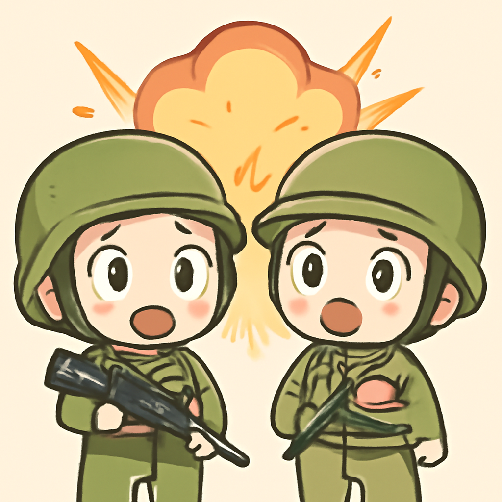
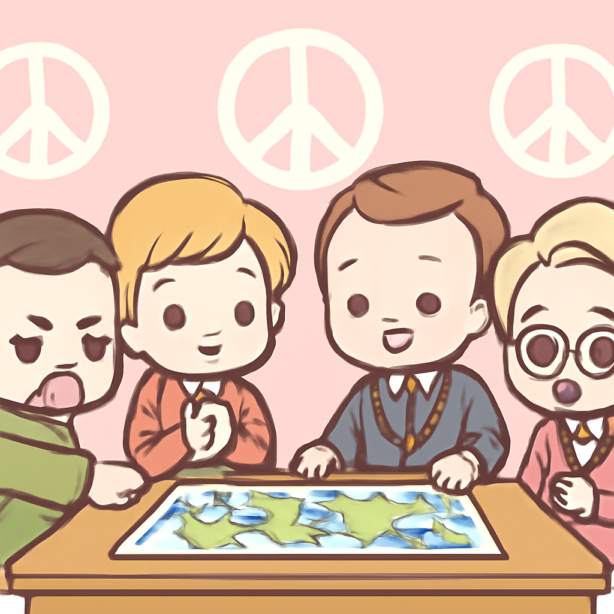
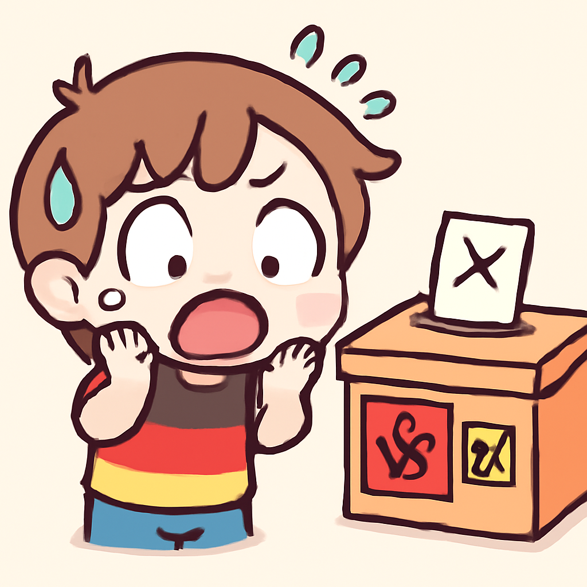
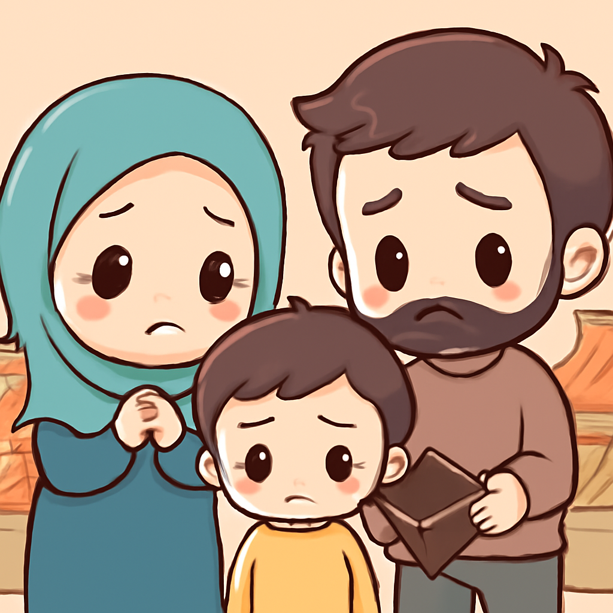

其一 · 以色列貝魯特郊區 · 空襲升級
以色列對貝魯特郊區發動空襲，局勢緊張。

在黎巴嫩貝魯特郊區，以色列於近日發動空襲，聲稱此舉是因為真主黨向以色列發射火箭。這一系列的衝突使得當地局勢持續緊張，並且影響到整個中東的穩定。這場鬥爭似乎讓人懷疑，和平的希望究竟何時能實現？
🔗 原始新聞 ↗
2026-06-08 · 以古觀今，以笑抗愁
以色列對貝魯特郊區發動空襲，局勢緊張。

在黎巴嫩貝魯特郊區，以色列於近日發動空襲，聲稱此舉是因為真主黨向以色列發射火箭。這一系列的衝突使得當地局勢持續緊張，並且影響到整個中東的穩定。這場鬥爭似乎讓人懷疑，和平的希望究竟何時能實現？
🔗 原始新聞 ↗
烏克蘭總統與歐洲盟友會議，尋求和平解決方案。

在基輔，烏克蘭總統澤倫斯基與歐洲盟友會面，討論和平談判的五項條件。這一會議的舉行，顯示出烏克蘭尋求結束衝突的積極態度，也反映出美國可能不再是唯一的調解者。大家都希望能早日結束這場無止盡的戰爭，讓和平的陽光再次照耀在烏克蘭。
🔗 原始新聞 ↗
德國小鎮選舉，新納粹黨候選人表現不俗。

在德國某小鎮，新納粹黨成員參加市長選舉，雖然最終落選，但這一結果顯示出極右派的影響力正在增長。這讓人不禁思考，德國在歷史教訓之後，為何仍然會有人選擇這條路。或許，社會對於極端主義的警惕還需要進一步提升。
🔗 原始新聞 ↗
伊朗面臨經濟崩潰，民眾生活困苦。

伊朗的經濟狀況日益惡化，通脹飆升讓民眾生活困苦。無論是支持政府還是反對的民眾，都感到失望與絕望。這場經濟危機不僅影響了民生，也讓國際社會開始重新思考對伊朗的制裁政策。究竟何時能迎來經濟的春天？
🔗 原始新聞 ↗
以色列發生槍擊事件，造成一死五傷。
在以色列特拉維夫，發生一起槍擊事件，造成一人死亡、五人受傷，肇事者最終被警方擊斃。這場事件再次引發對於安全問題的討論，民眾對於日益增加的暴力行為感到擔憂。或許，大家都該多一點關心，少一點衝突。
🔗 原始新聞 ↗